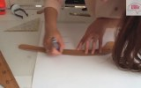

Bu Hafta En Çok İzlenen Moda Videoları
-
Kamera Arkası: Şükrü Özyıldız
897 izlenme 4 gün önce -
Dıy: Lastik Tokalardan Bileklik Yapımı
185 izlenme 5 gün önce -
Özge Özpirinçci Elele Dergisi Kasım 2014 Sayısı Kamera Arkası
121 izlenme 2 gün önce -
İğne Oyası Zürafa Modeli Yapımı
109 izlenme 4 gün önce
-
Bebek Bere Ve Şapkayapımı (Başlama Tekniği)
99 izlenme 4 gün önce -
Ankara Düğün Fotoğrafçısı
71 izlenme 3 gün önce -

Hadise InStyle Kasım 2014 Kamera Arkası
66 izlenme 2 gün önce -
Mine Tugay Elele Dergisi Temmuz Sayısı Kamera Arkası
27 izlenme 3 gün önce -

Modelistlik Kursu İzmir - Çan Etek Kalıp Çizimi
23 izlenme 4 gün önce -
Şükrü Özyıldız Güne Nasıl Başlıyor?
19 izlenme 1 gün önce -

Hadise - InStyle Kapak Çekimi Kamera Arkası 2014
16 izlenme 2 gün önce -
Derya Şensoy Elele Dergisi Mayıs Sayısı Kamera Arkası
14 izlenme 3 gün önce -
H&M Fall Fashion 2014
8 izlenme 2 gün önce -

Arda Can - Ömrüm Senin Gönlüm Senin ( 2014 BURSA )
6 izlenme 3 gün önce -
Weddıng Event Under The Sea
4 izlenme 5 gün önce -
Masa Örtüsü Seçerken Nelere Dikkat Etmeliyiz
3 izlenme 7 gün önce -
Street Style: Paris Fashion Week - H&M Life
2 izlenme 2 gün önce -
H&m Studio Aw14 Collection - Look Book
2 izlenme 2 gün önce